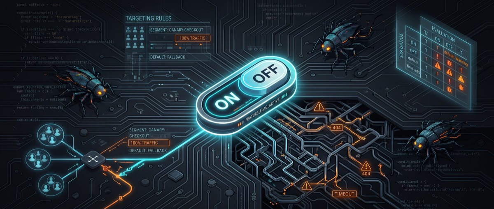

Testiranje feature flagova: bagovi koji se kriju iza prekidača
Testiranje feature flagova obično se završava na uključeno/isključeno. Pravi bagovi žive u pravilima targetiranja, podrazumijevanim vrijednostima i onome što se desi kada flag servis prestane da odgovara.
Feature flag bi trebalo da izdanja učini bezbjednijim: kod se isporuči „u mraku", uključi se za dio korisnika, a vraćanje unazad radi se prekidačem umjesto novim deployem. Većina timova testira tačno dva stanja flaga — uključeno i isključeno — i smatra da je to pokriveno. Incidenti koji zaista obore sisteme rijetko dolaze iz bilo kog od ta dva stanja. Dolaze iz stanja za koja niko nije napisao test: pravilo targetiranja koje obuhvata više korisnika nego što je planirano, evaluacija flaga koja tiho padne na pogrešnu podrazumijevanu vrijednost, ili flag koji se promijeni usred zahtjeva koji je već na pola puta.

Zašto „uključeno i isključeno" nije prava test matrica
Ponašanje flaga ne zavisi samo od njegove boolean vrijednosti. Zavisi od toga kako se ta vrijednost određuje i šta se dešava kada odluka uopšte ne može da se donese. Realna test matrica za jedan flag obuhvata:
- flag se evaluira kao true za ciljani segment
- flag se evaluira kao false za sve van tog segmenta
- flag servis istekne (timeout) ili je nedostupan, pa SDK padne na lokalnu podrazumijevanu ili keširanu vrijednost
- flag se promijeni između dva poziva u okviru istog zahtjeva ili sesije
- flag stupa u interakciju sa drugim flagom koji je takođe aktivan za istog korisnika
Taj posljednji red timovi najčešće potcjenjuju. Dva flaga, svaki testiran izolovano, mogu da se kombinuju u stanje koje niko nije isprobao. Tri aktivna flaga na checkout stranici već daju osam mogućih kombinacija; pet flagova daje trideset dvije. Niko ne piše trideset dva test slučaja za to, i zato postepena puštanja (staged rollouts) zahtijevaju monitoring, a ne samo testiranje prije izdanja — ali testiranje prije izdanja i dalje treba da pokrije kombinacije za koje je najvjerovatnije da će zajedno otići u produkciju.
Konkretan primjer: canary koji to nije bio
Zamislite tim koji pušta novi checkout tok iza flaga new-checkout-flow, targetiranog na 5% korisnika kroz pravilo segmenta u dashboardu flag providera (ili, sve češće, definisanog kao kod i poslatog kroz Terraform ili sličan alat). Pravilo glasi „obuhvati korisnike u segmentu canary-checkout". Kasnija izmjena te konfiguracije — pregledana kao rutinski infrastrukturni diff, a ne kao izdanje — zamjenjuje poklapanje segmenta pravilom koje obuhvata sve korisnike. CI provjerava da je konfiguracija sintaksno ispravan Terraform; ništa ne provjerava da canary flag i dalje cilja publiku veličine canaryja. Novi checkout tok, još uvijek u razvoju, odlazi na 100% saobraćaja umjesto na 5%. Objavljeni postmortem koji opisuje gotovo tačno ovakav otkaz (pogrešno upisano pravilo targetiranja koje je 5% canary pretvorilo u 100% rollout, nakon što je upravljanje flagovima prešlo sa UI-ja na infrastructure-as-code) nalazi se u izvorima ispod — konkretne brojke u njemu uzmite kao ilustrativne, jer izvještaj nije nezavisno potvrđen, ali sam oblik otkaza je poznat i ponavlja se.
Rješenje u ovakvom scenariju nije apstraktno „napišite više testova za flagove". Ono je konkretno: semantička provjera u CI-ju koja odbija izmjenu pravila targetiranja kojom se canary flag proširuje preko dogovorene granice, i korak pregleda za izmjene konfiguracije flagova koji ih tretira sa istom pažnjom kao deploy koda — jer one jesu deploy.
Testirajte putanju otkaza, ne samo srećnu putanju
Drugi slučaj koji vrijedi namjerno testirati je šta klijent radi kada uopšte ne može da dođe do servisa za evaluaciju flagova. Svaki flag SDK ima fallback ponašanje — keširanu posljednju poznatu vrijednost, hardkodovanu podrazumijevanu vrijednost ili posebnu „offline" vrijednost — i taj fallback je dio ponašanja vaše aplikacije bez obzira na to da li ste ga testirali. Stvarni incident na Statsigovoj status stranici sredinom 2026. pokazao je zašto je to bitno: izmjena na backendu dovela je do toga da se feature gateovi nekoliko sati evaluiraju kao false umjesto kao njihova predviđena podrazumijevana vrijednost, što je pogodilo korisnike na određenoj verziji API-ja u više regiona. Svako čija je „bezbjedna" podrazumijevana vrijednost za neki flag bila true — obrnuti kill switch ili flag koji uključuje sigurnosnu provjeru — dobio je suprotno ponašanje od očekivanog, tiho, satima.
Minimalan test za ovo izgleda ovako:
test('checkout falls back safely when flag service is unreachable', async () => {
const flagClient = mockFlagClient({ throwOnEvaluate: true });
const result = await getCheckoutFlowVariant(flagClient, { userId: 'u123' });
// Assert the SAFE default, not just "no crash"
expect(result).toBe('legacy-checkout');
});Asercija koja je bitna nije „aplikacija se nije srušila" — već da je fallback vrijednost upravo ona bezbjedna za taj konkretni flag, što je procjena koju vaš test treba eksplicitno da kodira, umjesto da je ostavi implicitnom u podrazumijevanim vrijednostima SDK-a.
Zamke i ograničenja
Testiranje flagova ima stvarna ograničenja koja vrijedi imenovati. Kombinatorna pokrivenost se ne skalira — ne možete i ne treba da pokušavate da testirate svaku kombinaciju svakog aktivnog flaga; izaberite kombinacije koje su zaista zajedno aktivne u produkciji i testirajte njih. Mockovanje flag klijenta u unit testovima neophodno je zbog brzine, ali suite koji uvijek samo mockuje klijenta nikada neće uhvatiti pad servisa za evaluaciju, mrežni timeout ili neispravan odgovor — za to je potrebno bar nekoliko integracionih ili chaos testova koji gađaju stvarni (staging) flag servis ili namjerno pokvaren. A zastarjeli flagovi su teret za testiranje, ne samo tehnički dug: flag koji ostane u kodu šest mjeseci nakon punog rollouta je putanja koda koju više niko ne testira, jer se niko ne sjeća da je i dalje uslovna.
Šta dalje
- Dodajte bar jedan test po flagu za putanju „evaluacija nije uspjela", i neka asercija provjerava konkretnu bezbjednu vrijednost za taj flag, a ne samo izostanak pada.
- Ako je targetiranje flagova definisano kao kod (Terraform, YAML, config repo), dodajte CI provjeru koja hvata semantičko proširenje canary pravila, i za tu izmjenu zahtijevajte isti pregled kao za produkcioni deploy.
- Izaberite dva ili tri flaga za koje je najvjerovatnije da će zajedno biti aktivni u produkciji i dodajte eksplicitne testove kombinacija za njih, umjesto da pokušavate da pokrijete svaku permutaciju.
- Svakom novom flagu postavite datum isteka pri kreiranju, i flagove kojima je taj datum prošao pratite kao stavku u backlogu — netestirana kombinacija flagova često je samo flag koji niko nije uklonio.
Izvori
- Postmortem: How a LaunchDarkly Targeting Misconfiguration Served Unfinished Features to 100% of Users — DEV Community, opis pogrešne konfiguracije canary targetiranja; konkretne brojke uzmite kao ilustrativne.
- Statsig Status: Feature Flag Evaluation Errors — izvještaj o incidentu u kojem su se feature gateovi nekoliko sati sredinom 2026. evaluirali na pogrešnu podrazumijevanu vrijednost.